將行李寄放在沙上區路易斯酒店的服務處, 在酒店的餐廳享用了免費「早餐」, 休息了一會, 便開始釜山的行程。我們在釜山的行程十分悠閒, 也沒有什麼必去的景點, 只想很輕鬆寫意, 不徐不疾的遊覽, 好好的享受旅程的最後兩天。
按計劃, 我們先從 掛法 Renecite 站 乘輕軌往大渚生態公園 (대저생태공원 Daejeo Ecological Park) 欣賞油菜花, 然後乘車輕軌返回沙上, 往三樂江邊公園 (삼락강변공원 Samnak Riverside Park) 散步, 行程十分簡單。
按地圖所示, 大渚生態公園的面積很大, 位於洛東江(낙동강)右岸, 最近的輕軌站是登龜站 (등구역 Deunggu Station), 便決從那裡進入公園。

走出酒店, 步行三分鐘便來到釜山沙上客運站, 穿過客運站大樓。
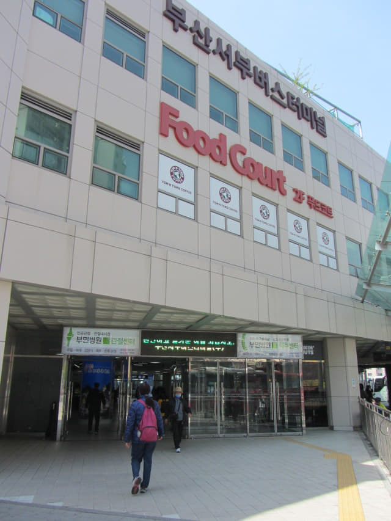
廣場路 (광장로)
接著沿輕軌下的廣場路走。現在的廣場路已經成為一個休閒公園, 有花、有草、有樹木和流水, 環境十分優美, 簡直就是一個旅遊景點。
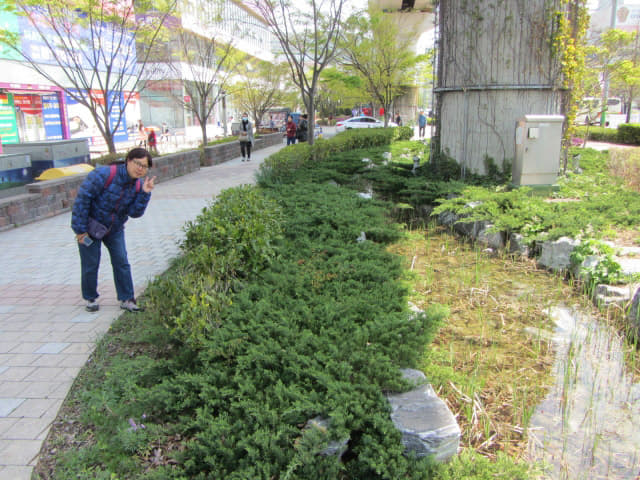
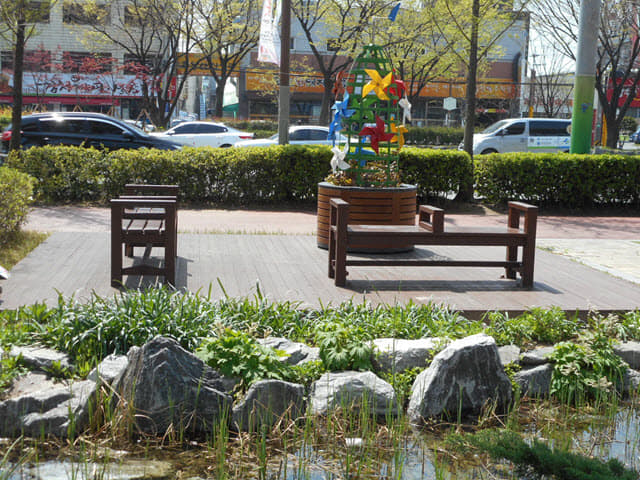
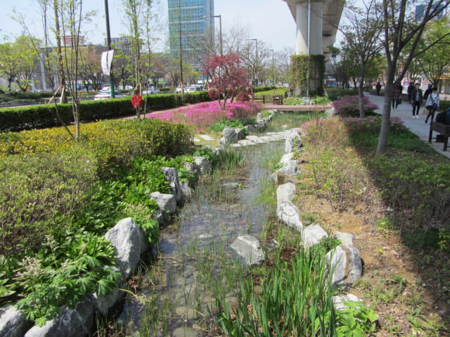
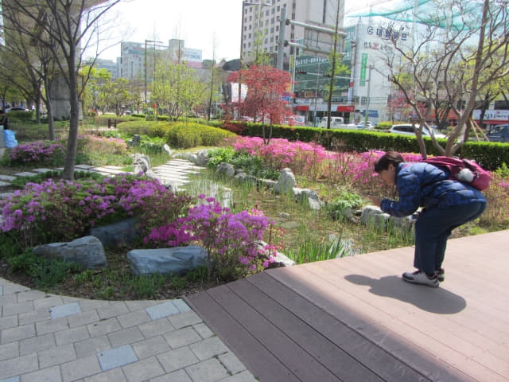
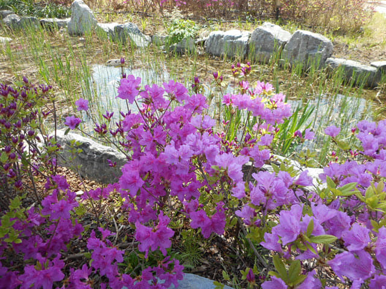
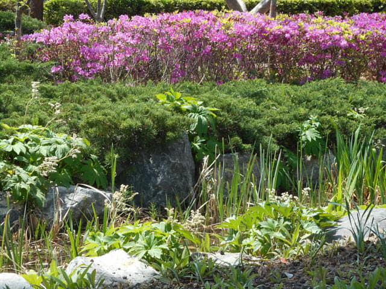
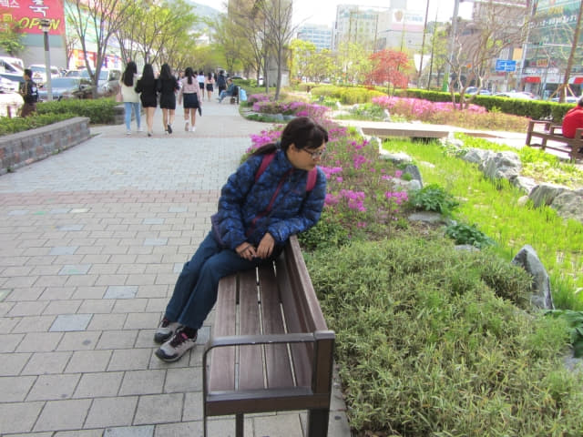
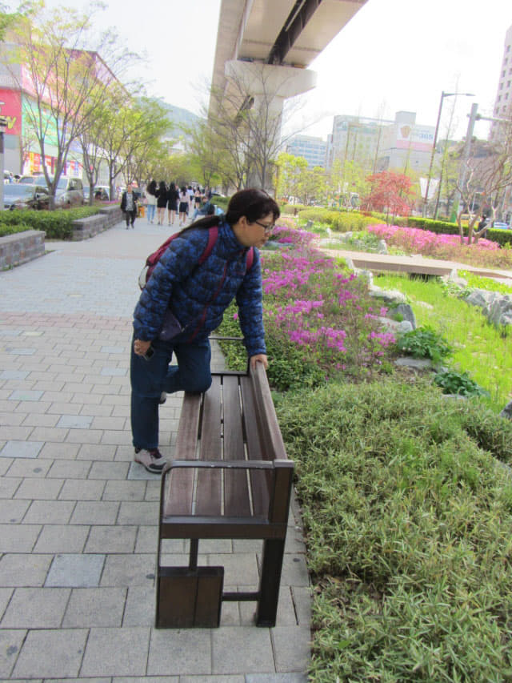
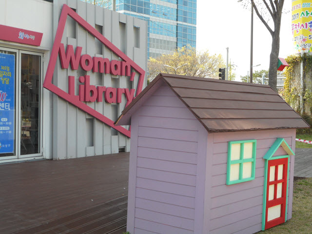
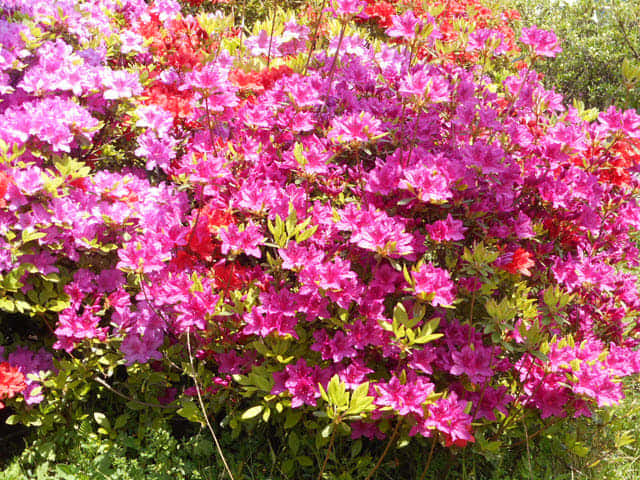
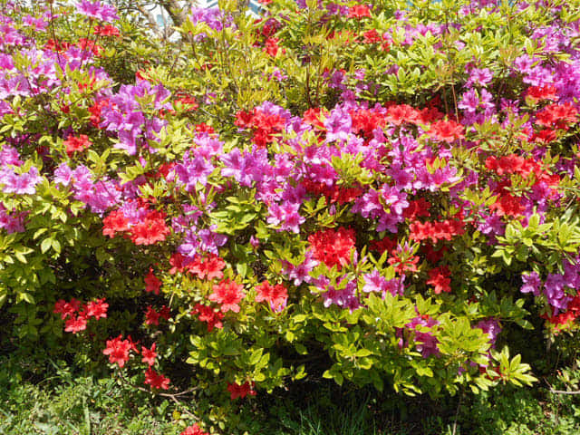
繼續沿廣場路往前走, 兩大百貨公司 — emart、Home plus 就在前面右邊的廣場內。
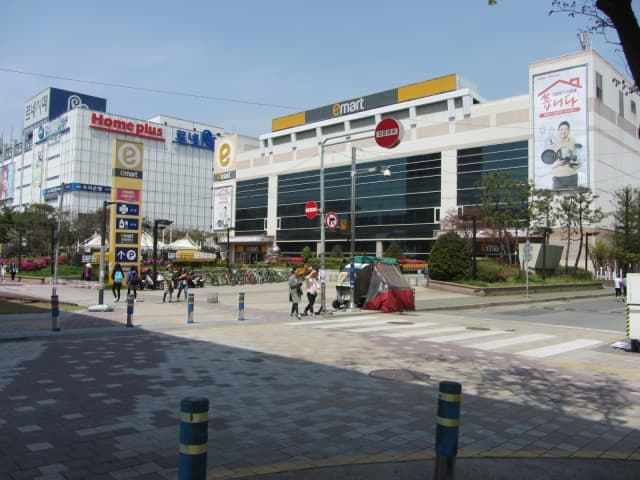
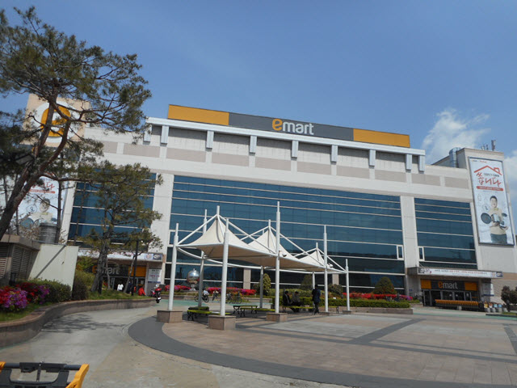
輕軌 掛法 Renecite 站 (괘법르네시떼역 Gwaebeop Renecite Station)
輕軌 掛法 Renecite 站 就在 Home plus 百貨公司對面。我們便是從這裡乘輕軌往大渚生態公園。
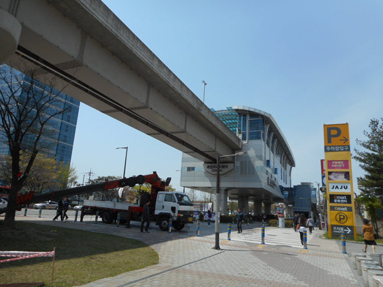
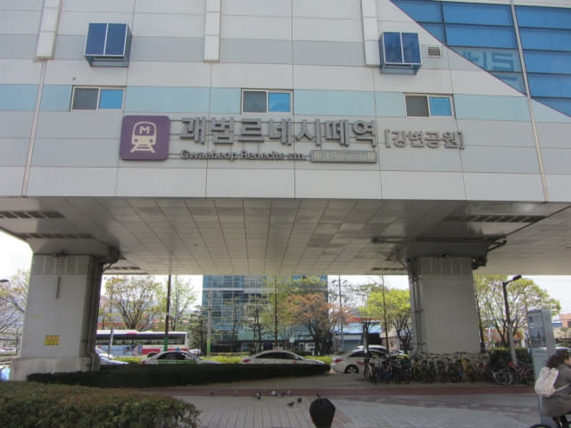
乘手扶電梯往天橋上的 掛法 Renecite 站。
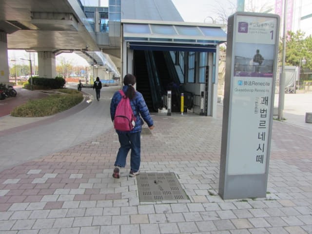
哈哈~~~ 她終於可以用 T-money 支付輕軌車票。
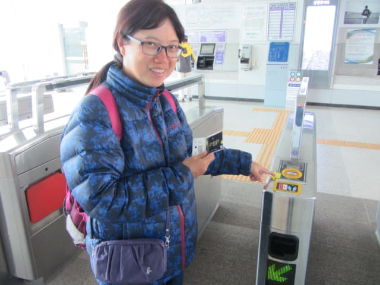
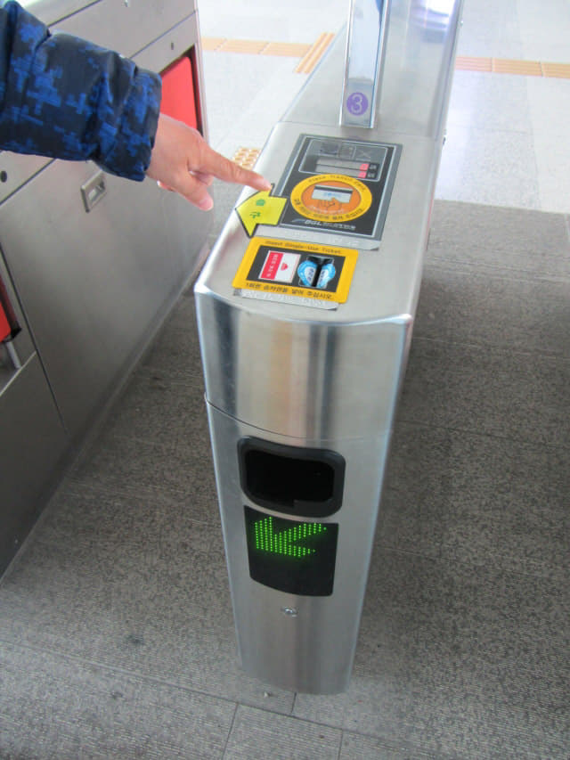
雖然已經搭乘釜山輕軌很多次, 每次的感覺都頗新鮮的。
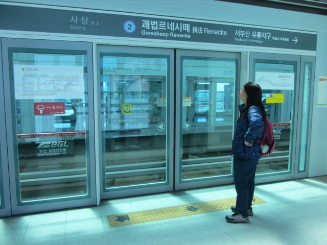
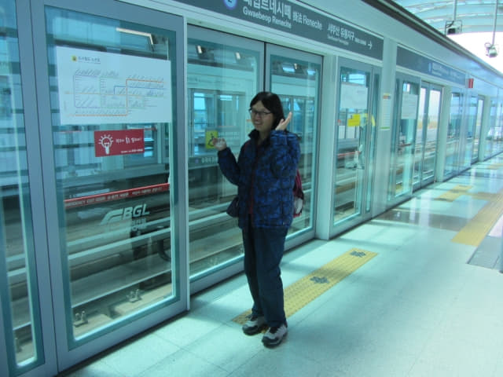
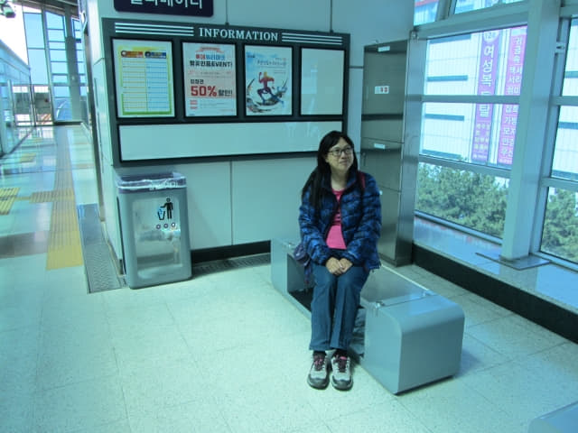
登龜站(등구역 Deunggu Station)
等了一會, 一輛無人駕駛的輕軌列車緩緩駛來, 登上了列車, 不一會便抵達登龜站。
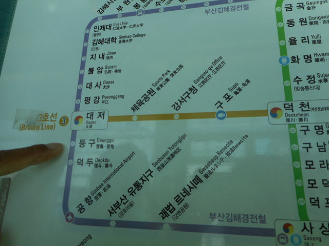